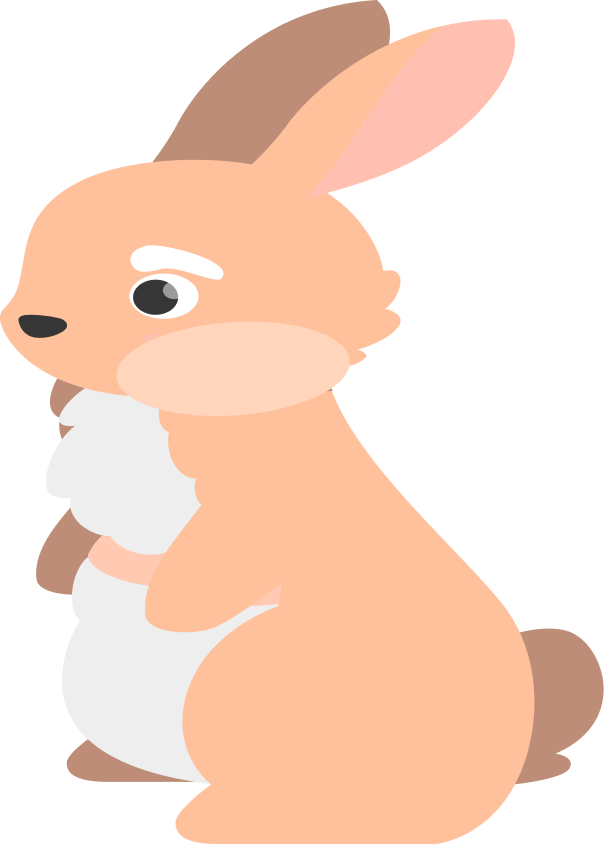
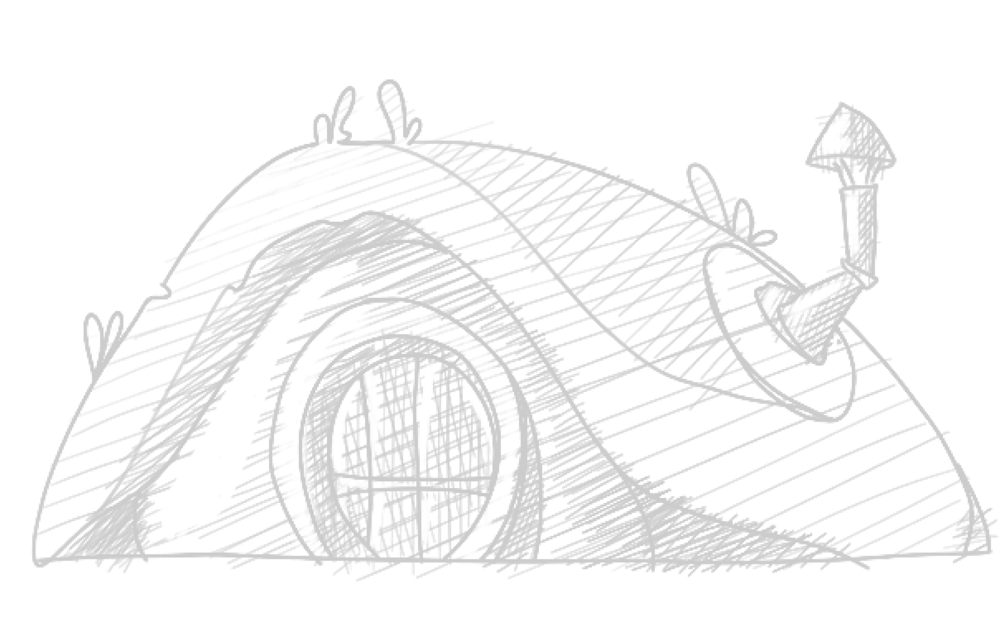
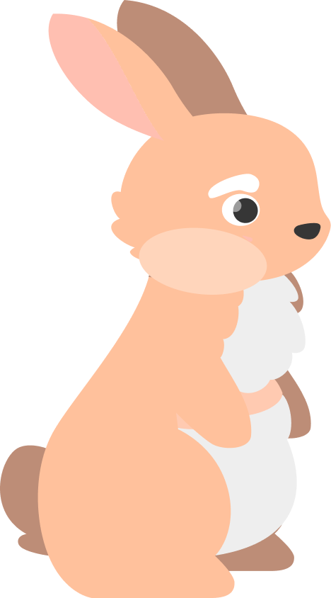

Как лень зайца сгубила

Быстрый Бакс и Ленивый Луи
Этот мультфильм поднимает важную проблему лени и какой вред
она может принести в жизни двух милых зайчиков.
Мы уверены, что этот мультфильм основан на реальных событиях,
и вы сможете это понять после просмотра. Приготовьтесь
к захватывающему путешествию вместе с Быстрым Баксом
и Ленивым Луи!
она может принести в жизни двух милых зайчиков.
Мы уверены, что этот мультфильм основан на реальных событиях,
и вы сможете это понять после просмотра. Приготовьтесь
к захватывающему путешествию вместе с Быстрым Баксом
и Ленивым Луи!


 

История Быстрого Бакса
Быстрый Бакс был сиротой, выросшим на улицах леса.
Он всегда был быстрым и ловким, и чтобы выжить, ему приходилось бегать и прыгать почти каждый день. Однажды, когда он был еще молодой, он встретил старого мудрого зайца, который научил его тому, как выживать в лесу и использовать свои навыки, чтобы найти еду и избежать опасности.
Быстрый Бакс до сих пор благодарен этому старому зайцу за то, что он научил его всему, что нужно знать о жизни в лесу.
Он всегда был быстрым и ловким, и чтобы выжить, ему приходилось бегать и прыгать почти каждый день. Однажды, когда он был еще молодой, он встретил старого мудрого зайца, который научил его тому, как выживать в лесу и использовать свои навыки, чтобы найти еду и избежать опасности.
Быстрый Бакс до сих пор благодарен этому старому зайцу за то, что он научил его всему, что нужно знать о жизни в лесу.
История Ленивого Луи
Ленивый Луи был рожден в богатой семье зайцев. Его родители всегда давали ему все, что он хотел,
и никогда не заставляли его работать. Луи вырос ленивым и безответственным зайцем, который не
заботился о своей жизни и не понимал, что нужно делать, чтобы выжить в лесу.
Он проводил дни, лежа на солнцепеке и едя все, что ему давали его родители. Когда он вырос, его
родители сказали, что ему нужно начать жить самостоятельно и переехали в другой лес, и Луи
оказался один в лесу.
Он не знал, как выживать без своих родителей, и был слишком ленивым, чтобы научиться.
 




История создания мультфильма
Ниже вы можете прочитать историю создания мультфильма, а так же каких пунктов придерживался автор, чтобы создать эту мультипликацию.
Автор хотел создать мультфильм, который был бы не только увлекательным и развлекательным,
но и имел бы глубокий смысл.
Он хотел передать важные уроки жизни через историю двух зайцев.
Пункты которым следовал автор во время создания мультфильма
- Разработка концепции видеоролика
- Подбор иллюстративного материала
- Итоговый сценарий мультфильма
- Раскадровка для каждой сцены
- Разработка персонажей и локаций
- Создание аниматика
- Создание готового мультфильма
- Проектирование сайта


Эскизы
Здесь вы можете увидеть какими изначально предполагалось персонажи, а так же какими они стали в конечном итоге создания мультфильма.
